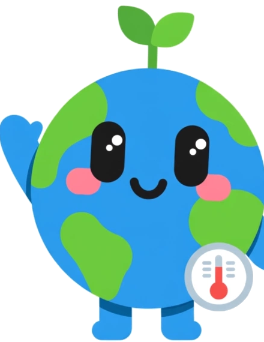

Pahlawan Cilik Iklim
Tema Esai:
Pendidikan Berkualitas di Era Perubahan Iklim: Strategi dan Inovasi Teknologi untuk Generasi Berkelanjutan dalam mendukung SDGs 4&13
Tujuan Utama:
Memberdayakan anak usia 5–15 tahun melalui gamifikasi interaktif. Anak memahami bahwa tindakan nyata (memilah sampah, bersepeda, menanam pohon) memiliki dampak langsung mendinginkan suhu bumi.